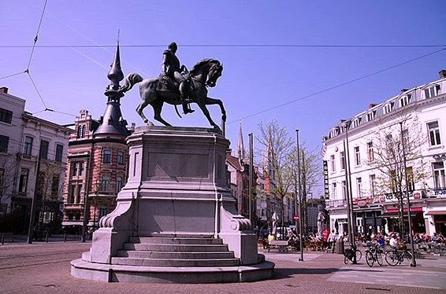

Woonerf
Een extra troef is de vernieuwde inrichting van de straat als woonerf. Hier zijn de wandelaar en de fietser baas.


Bruisende Buurt
De studentenkamers liggen vlakbij de bruisende Leopoldplaats en de Oudevaartplaats ("de vogeltjesmarkt"). De Stadsschouwburg is om de hoek en de winkelzone Meir bereik je na een paar minuutjes stappen. In de onmiddellijke omgeving vind je verschillende hogescholen en universiteitsgebouwen. Openbaar vervoer bevindt zich om de hoek (halte Antwerpen Nationale Bank).
Bereikbaarheid
Adres: Tabakvest 85, 2000 Antwerpen
Met Auto: Parking Nationale Bank vlakbij (betaald parkeren)
Met Fiets: Antwerpen is fietsenstadstad - fietspaden overal
Met OV: Halte Antwerpen Nationale Bank is 30 seconden lopen
Te Voet: Alles is loopafstand in het centrum